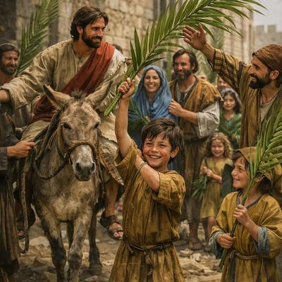

Cada año millones de cristianos celebran lo que conocen como «Domingo de Ramos», recordando la supuesta entrada triunfal de Jesús en Jerusalén pocos días antes de su ejecución. En las iglesias se reparten ramos y se canta «¡Hosanna!», recreando la escena narrada por los evangelios. Sin embargo, cuando el episodio se examina con mirada histórica y crítica, el acontecimiento adquiere un tono mucho menos piadoso y mucho más humano: el de un predicador judío convencido de su misión mesiánica, que decidió escenificar públicamente su papel en el drama apocalíptico que creía inminente.


Desde el punto de vista histórico, Jesús —si aceptamos que existió y damos cierta credibilidad a los evangelios— no fue un fenómeno aislado. En el turbulento siglo I abundaron los predicadores apocalípticos judíos que anunciaban la intervención divina para liberar a Israel del dominio extranjero. Entre ellos se encuentran figuras como Judas el Galileo o Teudas, quienes también prometieron señales divinas y terminaron violentamente eliminados por las autoridades romanas. Y Jesús habría sido uno más dentro de esa tradición de profetas y aspirantes a redentores nacionales.
Quien haya leído detenidamente los evangelios canónicos, tiene que haberse dado cuenta de que Jesús habría organizado su vida alrededor de dos convicciones fundamentales: que él era el Mesías esperado por Israel, el caudillo prometido que restauraría el reino judío y traería el juicio divino sobre el mundo. Y la segunda —todavía más radical dentro del monoteísmo judaico— que él era el único hijo biológico de Yahvé, el dios que ellos adoraban. Esto, porque se supone que su nacimiento se debió a una concepción milagrosa causada por el «Espíritu Santo», es decir, por la intervención directa del dios de Israel en la fecundación de María. Una explicación del embarazo extramarital de su madre, que aparece en los relatos de Evangelio de Lucas (Lucas 1:35). Y si Jesús creció escuchando esa historia, es fácil imaginar el impacto psicológico que pudo tener en su mente infantil.
El mismo evangelio presenta un episodio revelador de su adolescencia. Cuando sus padres lo encuentran en el templo de Yahvé en Jerusalén, él responde: «¿No sabíais que en los asuntos de mi Padre me es necesario estar?» (Lucas 2:49). Una frase que refleja la idea temprana de Jesús, de que su verdadero padre era adorado por el pueblo de Israel en aquel templo.
Y en los evangelios posteriores esa idea se vuelve aún más explícita. El autor del Evangelio de Juan, afirma que cuando Jesús hablaba de «mi Padre» refiriéndose a Yahvé, las autoridades judías entendían que se estaba refiriendo al dios que ellos adoraban (Juan 5:16-18). En otras palabras, no lo interpretaban como una metáfora piadosa, sino como una afirmación literal y blasfema.
Y desde esa perspectiva, Jesús habría considerado que tenía una ventaja decisiva frente a los demás pretendientes mesiánicos que circulaban por Judea. Si él era realmente el hijo biológico de Yahvé, entonces su misión tenía el respaldo directo del dios nacional de su pueblo.
Pero sus ideas eran peligrosas. Pretender ser el Mesías tenía implicaciones políticas explosivas. Para el imperio romano, cualquier aspirante a «rey de los judíos» podía interpretarse como un agitador potencial. Y proclamarse hijo biológico de Yahvé era una blasfemia para los líderes religiosos judíos.
Así que no es casual que los evangelios presenten a Jesús hablando frecuentemente en parábolas y metáforas. Ese estilo ambiguo le permitía sugerir la identidad que se autoadjudicaba, sin declararla abiertamente, evitando así provocar una reacción inmediata de las autoridades civiles y religiosas.
Por cierto, los evangelios mismos reconocen que existían numerosos «falsos mesías». En el Evangelio de Mateo se advierte repetidamente sobre ellos (Mateo 7:15; 24:11; 24:24). Y el Evangelio de Marcos también menciona que aparecerían individuos capaces incluso de realizar «señales y prodigios» para convencer a la gente (Marcos 13:22).
Por otra parte, los evangelistas atribuyen también a Jesús numerosos milagros: curaciones, exorcismos, multiplicación de alimentos y otros prodigios. Y en la lógica religiosa de la época, tales actos debían interpretarse como señales divinas que confirmaban su mensaje.
En este contexto, resulta inevitable ver el episodio de la entrada de Jesús en Jerusalén aquel primer «Domingo de Ramos», como un evento calculado que era parte de la culminación de su estrategia simbólica. Según los relatos de Marcos y Mateo, Jesús envió a dos discípulos a buscar un asno previamente preparado. La contraseña para obtener el animal era simplemente decir que «el Señor lo necesita». Pero, ¿para qué quería Jesús entrar a Jerusalén montado en un asno precisamente aquel día tan cercano a la Pascua judía? El objetivo era claro: representar deliberadamente una profecía mesiánica.
La escena evocaba una antigua profecía del Libro de Zacarías (9:9), donde se anuncia que el rey de Israel llegaría montado en un asno. Al reproducir Jesús ese gesto en medio de la multitud que acudía a Jerusalén para su festividad más importante, estaba enviando un mensaje inequívoco: él era el Mesías prometido. De hecho, según los evangelios, la multitud reconoció que eso estaba ocurriendo, y por eso comenzó a gritar: «¡Hosanna! ¡Bendito el que viene en el nombre del Señor! ¡El Rey de Israel!»
En otras palabras, estaban proclamando públicamente que aquel predicador galileo era el esperado libertador nacional. Y el relato de Lucas añade un detalle significativo. Algunos fariseos pidieron a Jesús que calmara a sus seguidores para evitar problemas. Pero él, empoderado, respondió con esta frase: «Si ellos callan, las piedras clamarán» (Lucas 19:39-40).
Desde una perspectiva histórica, la preocupación de los fariseos era comprensible. Jerusalén estaba llena de peregrinos, y bajo estrecha vigilancia romana durante la Pascua. Un gesto mesiánico en ese ambiente, podía interpretarse como provocación política. Sin embargo, Jesús no retrocedió. Todo indica que el predicador galileo creía que aquel gesto desencadenaría los acontecimientos finales. Y los evangelios muestran que esperaba una intervención divina inminente: el juicio de «Dios», la derrota de los impíos y la instauración en Israel del reino de Yahvé.
Dentro de aquella lógica apocalíptica, su muerte no era el final, sino parte del plan, ya que Jesús parece haber interpretado su destino como una inmolación redentora, adoptando el papel de una especie de chivo expiatorio, cuya muerte provocaría la intervención divina. Incluso, al parecer, esperaba que Yahvé interviniera en el último momento de manera espectacular, reivindicándolo ante todos. Pero eso no ocurrió. Por lo que, en un momento culminante de su crucifixión, lanzó un grito desesperado: «Dios mío, Dios mío, ¿por qué me has abandonado?» Una escena que sugiere la posibilidad de que ocurrió un final muy distinto al que había imaginado.
Lo que siguió después es bien conocido: sus seguidores reinterpretaron su ejecución como parte de un «plan divino», proclamaron su resurrección (algunos sugieren que hurtando su cadáver, según Mateo 28:11-15) y transformaron el fracaso de un aspirante mesiánico en el nacimiento de una religión mundial. Así, lo que pudo haber sido simplemente la historia de otro predicador apocalíptico fracasado, terminó convirtiéndose en el núcleo de la fe cristiana.
Por tanto, lo que ocurrió aquel primer Domingo de Ramos, lejos de ser una escena de inocente devoción, podría entenderse históricamente como la provocación final de un hombre convencido de su papel en el drama cósmico que esperaba desencadenar. Una representación simbólica cuidadosamente preparada para cumplir antiguas profecías… y precipitar los acontecimientos que, según él creía, obligarían a su Padre celestial a intervenir.
La historia posterior la escribieron sus seguidores. Pero el episodio original, leído con frialdad histórica, revela algo muy distinto: el momento en que un predicador galileo decidió actuar públicamente como el Mesías que estaba seguro de ser.
[Godless Freeman]
Comentarios
Comments powered by Disqus